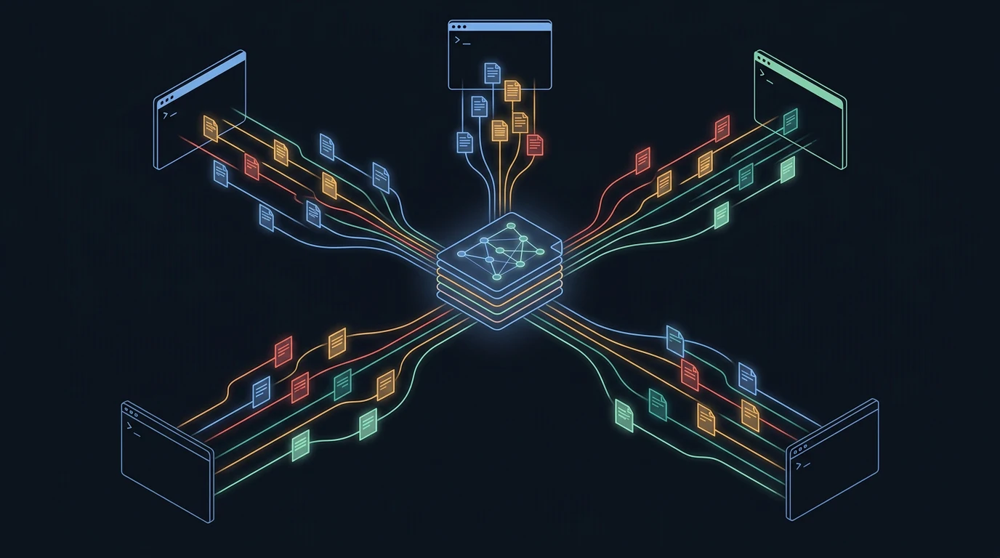
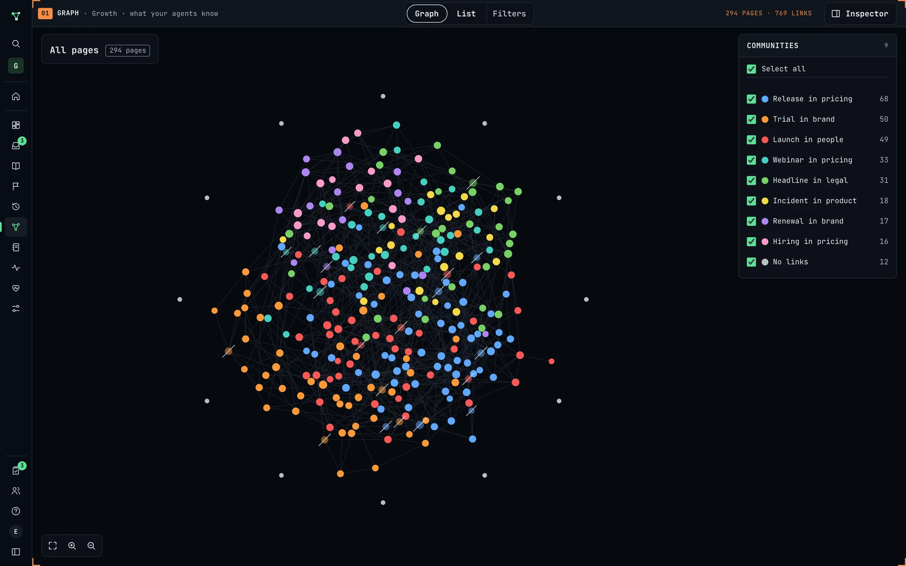
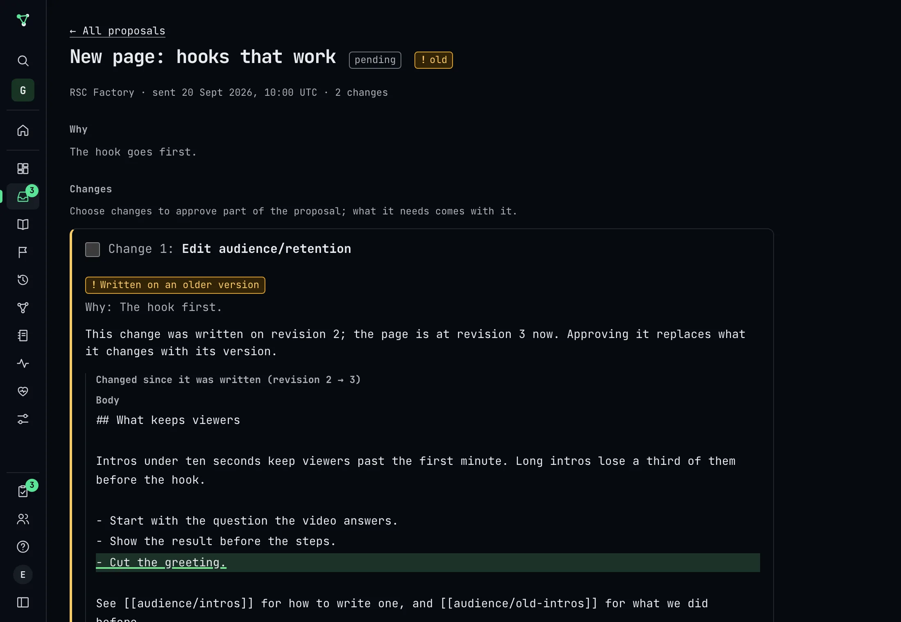
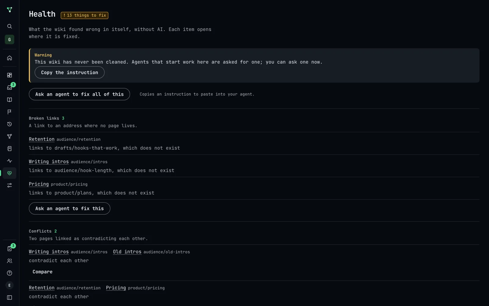

Memory for your AI agents
Agents write down what they learn. People decide what becomes the record. Every agent reads it before it works. Self-hosted, on your own server.
Approved. Revision 7 is live and every agent reads it from now on.
Returned to codex. Your comment is in its journal as a correction; it reads it next session.
What rsc-brain is
Every agent starts from zero. It forgets last Tuesday's decision and why billing works the way it does. rsc-brain is where that stays.
Who it is for. Teams that already work with coding agents and assistants every day, and are tired of explaining the same context in every session, to every tool, to every new colleague.
What it keeps. A journal of what agents did and learned, and a wiki of what the team decided is true: typed pages with typed links, each citing the journal entries it came from, with revisions and an undo.
Where it runs. On your own server or laptop, in containers, on PostgreSQL. MIT licensed. No model runs on the server and nothing is sent anywhere unless you switch it on.
How agents reach it. Over MCP, with the standard sign-in or a personal token: Claude Code, Codex, Cursor, OpenCode, any MCP client. Programs use the same routes over HTTP.
Many agents, one record
Each agent saves while it works, in whatever tool you use. The brain turns those notes into one record that the next agent, and the next person, can trust.

How it works
From a note in a session to what the whole team knows, with a person in charge. The panels show a sample brain.
Agents keep a journal as they work.
Decisions, lessons, attempts, facts, preferences. Every save has a receipt, a retry never duplicates, a topic is revised instead of repeated, and secrets are removed before anything is stored.
Then one proposes what should become knowledge.
Typed pages and links, each citing its sources. Before sending, it is warned about contradictions and pages that may say otherwise. Changes made on an older revision are flagged.
A person decides. Every agent reads the result.
Approve all or part, correct, or return with a comment the agent learns from. A key a curator trusts can decide too, over MCP. Search ranks what replaced a page above what it replaced.
codex · topic billing/stripe14:02
claude-code · incident13:41
claude-code13:20
cursor · source: Stripe docs11:08
opencode10:55
5 attempts, backoff · cites #212, #219rev 6→7
what happened, what changed · cites #208new
the old page ranks below the new onetyped
possible contradiction · neighbour pagewarn
Network errors retry 5 times with exponential backoff from 2 s. Card declines keep 3 attempts. Refunds never retry; they page on-call.
See what your agents know
The web shows the wiki as a living graph, coloured by the communities its own links form. Pages with no links yet circle the whole brain, so what is disconnected is obvious at a glance.



Search before deciding
Agents search the wiki and the journal together before they act. Try it: this is the ranking rsc-brain uses, running in your browser over a small sample brain.
On a real installation BM25 comes from the pg_search extension when PostgreSQL has it, with a full-text fallback when it does not. Ranking in the reference
Why not just…
| rsc-brain | Notes in chat history | A vector store | |
|---|---|---|---|
| Outlives the session | Yes, on your server | Until the chat is gone | Yes |
| Shared by every agent and tool | Yes, any MCP client | One tool, one person | If you wire each one |
| A person decides what is true | Yes, proposals and review | No | No, whatever was stored |
| Sources for every claim | Each page cites its entries | Buried in a thread | Chunks without context |
| Knows what was replaced | Yes, it ranks below | No | Old and new look alike |
| Flags contradictions | Before and after a change | No | No |
| Readable by people | A wiki with history | Scroll and hope | Not really |
| Secrets kept out | Removed before saving | Whatever was pasted | Whatever was embedded |
Connect the agentyou already use
Full setup guideReplace brain.example.com with your installation. The web's Connect your agent page gives each block with your address already in it, and keeps tokens out of shared files.
Questions
Keep what agents learn, from
# download the launcher from a release and check it
curl -fsSLO https://github.com/ericrisco/rsc-brain/releases/download/v0.7.0/rsc-brain.sh
shasum -a 256 rsc-brain.sh # must match the release notes
# PostgreSQL included; the web opens on http://localhost:8090
sh rsc-brain.sh install --localYou need Docker with Compose v2 and git, on macOS or Linux. Open the address, make the administration account, keep the installation key it shows you.
On a server with a domain, install --domain brain.example.com puts HTTPS in front. An existing PostgreSQL, updates, encrypted copies and uninstall are all in the install reference.